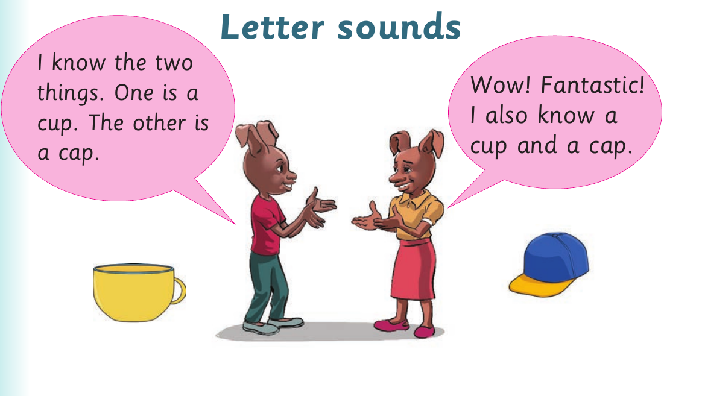

Unit Two: Letter sounds

Letter sounds I know the two Wow! Fantastic! things. One is a I also know a cup. The other is cup and a cap. a cap.

Letter sounds I know the two Wow! Fantastic! things. One is a I also know a cup. The other is cup and a cap. a cap.